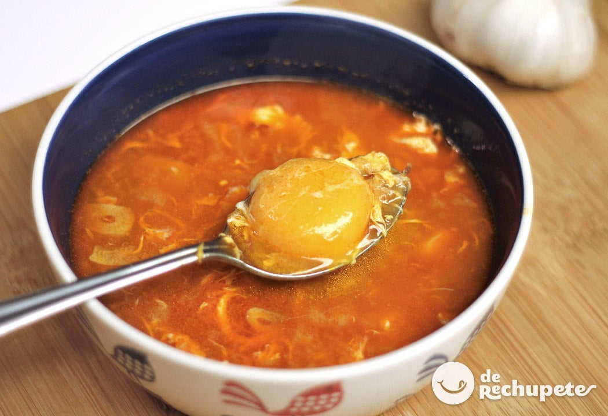

Sopa Castellana
- Dificultad: facil
- Comensales: 6
- Tiempo: 15 min.
- kcal: 187 por 100g
Nuestras abuelas y nuestras madres ya nos preparaban este plato tan natural, tradicional y reconfortante. Les bastaba con ajos, pan, pimentón, agua y un poco de jamón para que nos quedásemos embobados contemplando el fuego. Siempre mirando la cazuela para ver si ya estaban listas para cenar. Yo aconsejo un buen tazón de sopas de ajo como cena, la primera cucharada de sopa ya mete el calor en el cuerpo. Su toque de ajo y su aroma de pimentón me recuerda a las cenas viendo la tele en la casa de mi prima Miriam. Hoy os dejo con su receta aunque no se porqué, nunca me salen al 100% como a ella… Seguro que tiene algún secreto que no me ha revelado. Esta reconfortable sopa merece un lugar en vuestro menú semanal de otoño e invierno, espero que la disfrutéis.
1º Cortamos el pan en rebanadas muy muy finas y las echamos en la cazuela de barro. Hervimos el agua y majamos el ajoy la sal en el mortero, dejándolo muy muy fino.
2º Agregamos la manteca (preferentemente Ibérica) ó aceite de oliva virgen extra + pimentón al majado. Mezclamos bien el majado y cuando el agua está a punto de hervir, paramos el fuego. El ajo no debe hervir, hay un dicho por mi pueblo que dice: “ajo hervido ajo perdido“. Añadimos el majado, separando un cazo de agua para “lavar” el mortero (no se debe perder nada).
3º Mezclamos bien y vertemos sobre el pan.
4º Disfrutaréis de unas sopas con sabor total a ajo. En el sabor influye mucho la calidad del pimentón. Y lógicamente se le puede poner un huevo, jamón, … antes de verter el agua + majado pero antes os recomiendo probarlas tal cual.
Eso si, os tiene que gustar el sabor a ajo y el del pimentón crudo, el sabor de la mezcla es realmente rico rico.